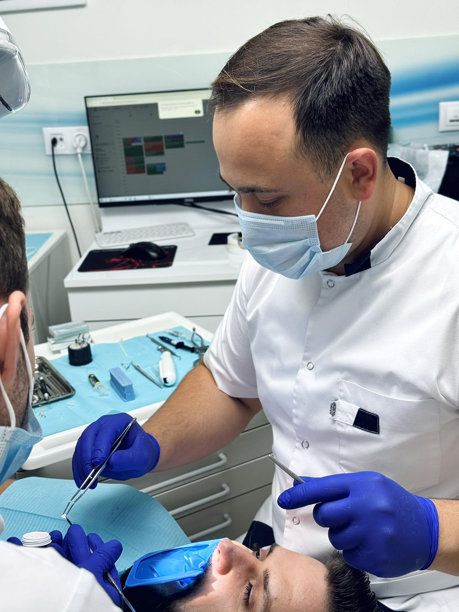
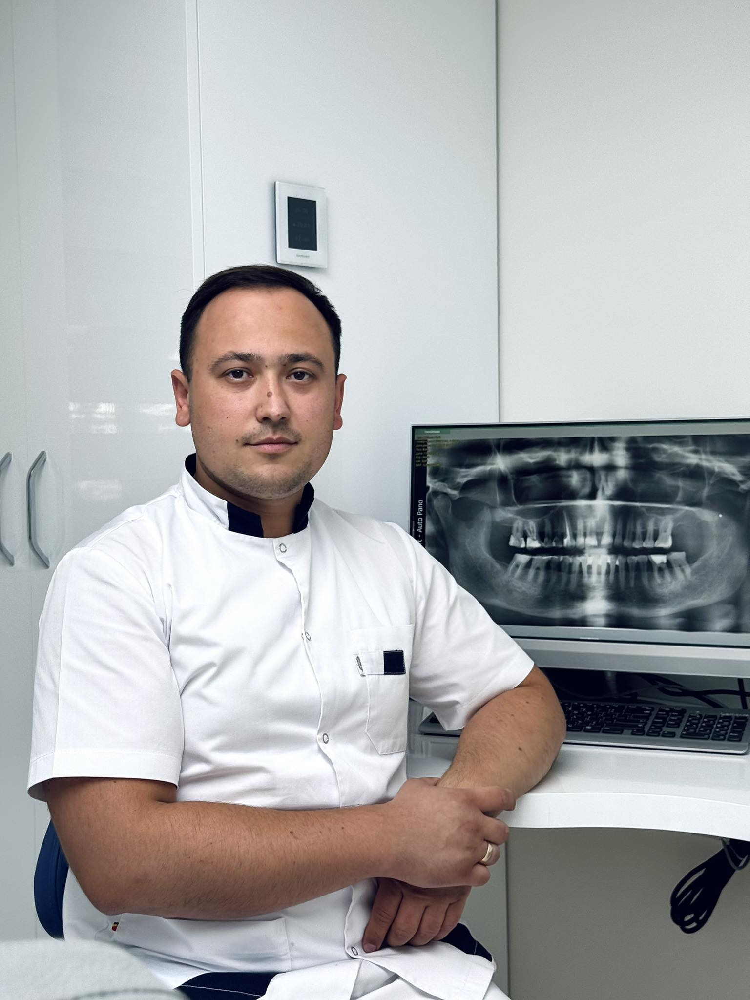

Intervenții chirurgicale orale minim invazive, cu anestezie locală modernă și recuperare rapidă.

Chirurgia orală cuprinde totalitatea intervențiilor chirurgicale în cavitatea bucală și țesuturile adiacente. De la extracții simple la proceduri complexe de regenerare osoasă și ridicare de sinus.
La Parodontal Clinic, chirurgia orală este realizată de medici cu experiență vastă, într-un mediu steril și controlat medical. Folosim cele mai moderne tehnici chirurgicale și anestezice pentru a asigura confort și rezultate optime.

Dr. Alexandru Muradu este o autoritate în chirurgia orală, cu peste 18 ani de experiență în domeniu. Specialist în extracții complexe, implantologie și proceduri de regenerare osoasă.
Absolvent al Universității de Medicină și Farmacie din Chișinău, cu certificări internaționale în chirurgia parodontală și regenerativă. Dr. Muradu este cunoscut pentru abordarea minimaliste și rezultatele excepționale.
Completează formularul și te contactăm în cel mai scurt timp pentru a stabili o consultație și plan de tratament personal.
Proceduri chirurgicale complete cu rezultate optime și recuperare rapidă.
Extracția dinților cu probleme minore în condiții controlate. Procedură nedureroasă cu anestezie modernă și cicatrizare optimă.
Extracția dinților incluși, impactați sau cu rădăcini complicate. Intervenție minutioasă de Dr. Alexandru Muradu cu recuperare rapidă.
Augmentare osoasă pentru preparare implantare. Folosim biomateriale certificate și tehnici avansate de regenerare.
Procedură de ridicare a sinusului maxilar pentru implantare. Creează spațiu osos optim în zona sin maxilar.
Creșterea volumului osos în vertical pentru cazuri complexe. Utilizare de autograft și biomateriale din surse biologice.
Evaluare completă, CT/CBCT, plan chirurgical detaliat. Prima consultație cu Dr. Muradu este gratuită pentru cazuri noi.
Glisează stânga-dreapta pentru mai multe cazuri →
Descrieri detaliate ale transformărilor. Cine are nevoie de mai multă informație.